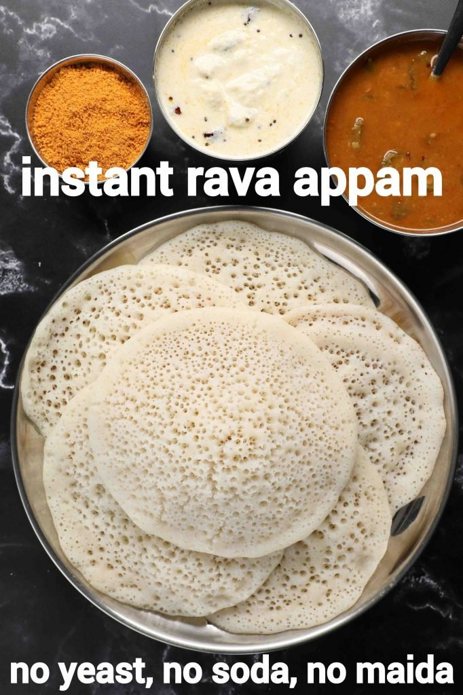

Back to homepage
Rava appam

Description
An easy and simple breakfast dosa recipe made with semolina, poha and sour curd. unlike the traditional dosa appam recipe, this recipe does not require soaking, fermentation and the batter can be made in less than 15 minutes. the fermentation process is hastened by adding eno fruit salt, but you may also add instant dry yeast for the same purpose.
Ingredients
- 1 cup rava / semolina / suji (coarse)
- ¾ cup poha / beaten rice (thin)
- ½ cup curd
- 2 tsp sugar
- 2 cup water
- ½ tsp salt
- ½ tsp eno (fruit salt)
Steps
- firstly, in a small mixi take 1 cup rava and ¾ cup poha.
- blend to a fine powder without adding any water.
- now add ½ cup curd, 2 tsp sugar,½ tsp salt and 1 cup water.
- whisk and mix well until there are no lumps.
- now add 1 cup water and mix well.
- mix until a smooth flowing consistency batter is formed.
- now add ½ tsp eno and mix gently.
- once the batter turns frothy, immediately pour over the hot tawa.
- keep the flame on medium and cook until the top of appam is cooked completely.
- finally, enjoy instant rava appam with coconut chutney.